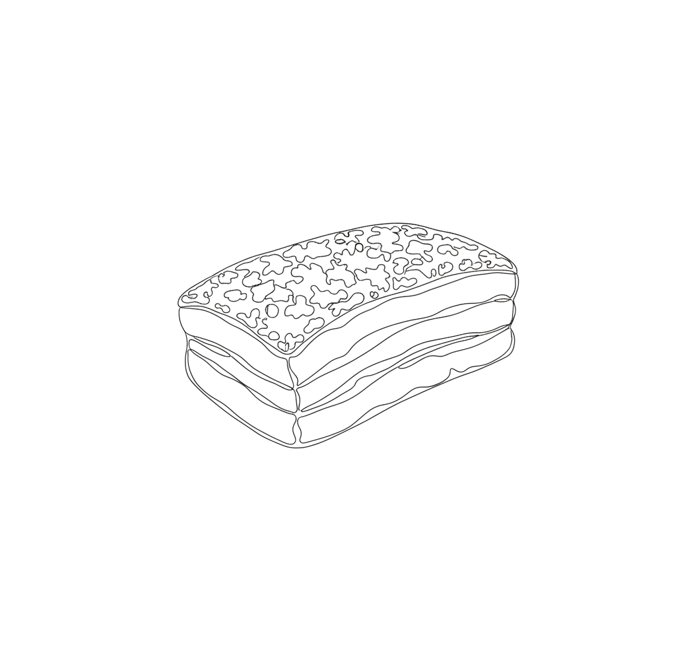

Crispy Sous Vide Pork Belly

Ingredients
- Pork belly
- Galangal or sand ginger
- Salt
Steps
- Air dry the pork belly uncovered in the fridge to dry out the skin.
- Season with salt and galangal or sand ginger.
- Sous vide at 68°C for 16 hours.
- Remove from the bag and air dry the belly again. Poke holes in the skin with a 3-prong sausage skewer or fork — stay just below the surface of the skin, don't hit the meat.
- Return to the fridge, uncovered, for 3 days to dry the skin further.
- Wrap the belly in foil, covering the edges too. Roast at 240°C for about 40 minutes total: uncrimp the foil edges for the last 10 minutes so the skin can blister, and rotate the tray at the 10 and 20 minute marks. Watch the skin closely in the final 5–10 minutes and pull it as soon as it's blistered and crackling.
- Rest for 10 minutes, then cut and serve.
The two dry-outs (before and after sous vide) are what make the crackling — don't skip the 3 days in the fridge.